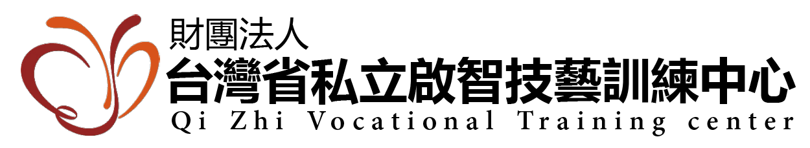
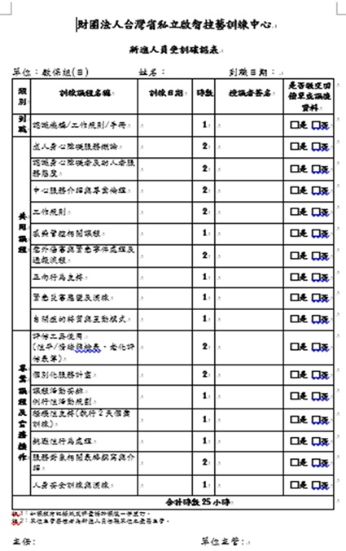
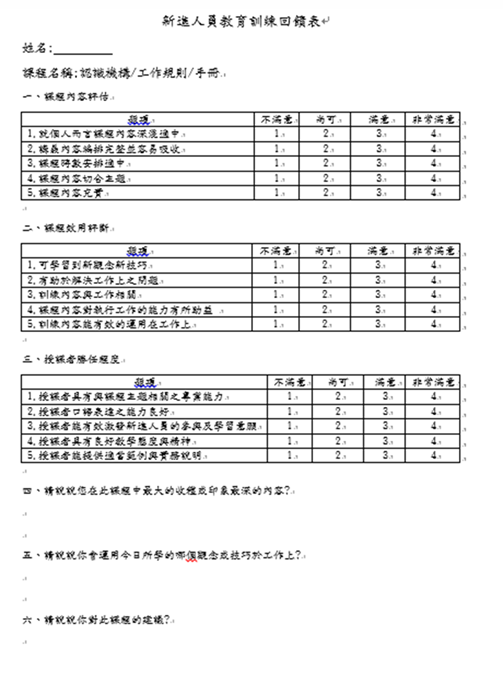

新人教育訓練規範說明
一、加入官方LINE員工訊息中心
- 官方LINE每月會發送「員工教育訓練的課程表」及不定期「公告」，請留意訊息。
- 透過LINE下方選單，進入到鎧琳資訊系統→員工專區→員工須知，可參閱以下內容:
- 參加教育訓練後，官方LINE會傳送「課程回饋表」，請務必填寫。
★ 沒有上課請勿填寫回饋表。
★ 評鑑類課程全中心皆須上課，務必填寫回饋表。
二、新人教育訓練－實體課程篇
- 依評鑑規定，新進人員到職三個月內應完成24小時教育訓練。
- 課程詳見「新進人員受訓確認表」及「新進人員受訓回饋表」。
- 請於三個月內完成上述兩份表單。
- 如三個月內離職，請歸還「確認表」及「回饋表」。
「新進人員受訓確認表」說明：
- 課程分為：

- 「到職」課程：完成報到後由人資簽名。
- 「共同課程」：與其他組別參與兩日課程，時間另行通知。
- 「專業課程」：由各部門督導安排，授課者需簽名或蓋章，並填寫訓練日期。
- 完成後，請連同「回饋表」交至部門組長審核。
「新進人員受訓回饋表」說明：

- 完成所有課程後填寫。
- 所有題項皆須填寫，簡答題不限字數，不可空白。
- 完成後連同「確認表」交至部門組長審核。
三、新人教育訓練－線上課程篇
- e等公務園學習平台：
- 完成 6 小時「感染管制課程」，到職兩週內繳交證書。
- 完成 2 小時「CRPD課程」，到職兩週內繳交證書。
- 臺北E大數位學習網：
- 完成「資訊安全_如何管理及保護電子資料」，到職一個月內繳交證書。
- 上課資訊請參考「e等公務園學習平台」與「臺北E大」的通知單。
四、在職教育訓練規範說明
- 每人每年需完成 20 小時教育訓練（不含新人訓練）。
- 評鑑課程為必修，包含：
- 口腔課程：2 小時
- 感染控制課程：4 小時
- 性侵害課程：每年一次
- 課表會註明評鑑課程與例行課程。
- 課程地點多位於 1 樓視聽室，請準時簽到並課後填寫回饋表或測驗。